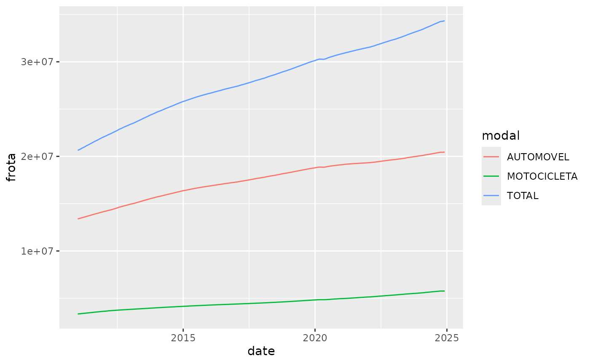

The fleetbr package contains a single dataset of the
registered motor vehicles in Brazil by state and mode of transportation
from 2011 to 2023, provided in tibble format for
integration with the tidyverse packages. The date is
acquired from the open data sources of the Brazilian Ministry of
Transport.
Instalation
You can install the development version of fleetbr from
GitHub with:
# install.packages("devtools")
devtools::install_github("jotasaraiva/fleetbr")Example
Afterwards, the package can be loaded along with the
dplyr, ggplot2 and lubridate
packages for filtering and plotting a subset of the data:
In this example, a time series of the data from the state of São Paulo is displayed:
fleetbr |>
filter(uf == "SP",
modal %in% c("TOTAL", "AUTOMOVEL", "MOTOCICLETA")) |>
mutate(
date = ym(paste0(ano,"-",mes))
) |>
ggplot(aes(date,frota, color = modal)) + geom_line()